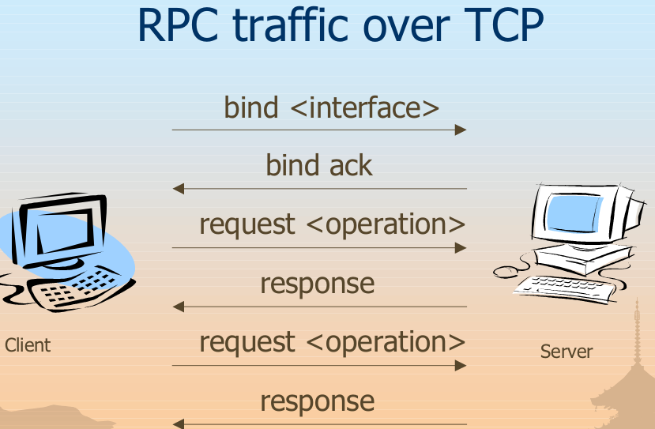

RPC server programs typically use dynamic port mappings to avoid conflicts with programs and protocols registered in the range of well-known TCP ports. RPC server programs associate their universally unique identifier (UUID) with a dynamic port and register the combination with the RPC EPM. The EPM provides a single point of contact for RPC clients. The RPC clients contact the EPM and use the server program’s UUID to determine the port being used by the server program. The following table indicates the network ports normally used by RPC.
Port Assignments for RPC
Service Name UDP TCP
HTTP 80, 443, 593 80, 443, 593
Named Pipes 445 445
RPC Endpoint Mapper 135 135
RPC Server Programs <Dynamically assigned> <Dynamically assigned>
The MSRPC port mapper is advertised on TCP and UDP 135 by Windows systems. It cannot be disabled without drastically affecting the core functionality of the operating system
MSRPC interfaces are also available via other ports, including TCP/UDP 139, 445 or 593, and can also be configured to listen over a custom HTTP port via IIS or COM Internet Services
